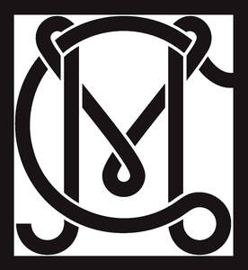

Trade Mark Journal No.2026/010 6 March 2026
UK00004341293 16 February 2026 (18,25,35)

- Class 18
- Bags; purses; wallets; handbags; tote bags; cosmetic bags; toiletry bags; business card cases; umbrellas; collars, leashes and clothing for animals; key cases; coin holders.
- Class 25
- Clothing; footwear; headwear; sleepwear; underwear; socks; belts, gloves, scarfs and other accessories in this class; clothing, footwear and headwear for women; clothing footwear and headwear for children and infants; business clothing; work wear; casual clothing; formal clothing; face masks (clothing, not for medical or sanitary purposes); knitwear, dresses, skirts, tops, shirts, jackets, coats, t-shirts, singlets, lingerie, pants, shorts.
- Class 35
- Retail services, online retail services and wholesale services and mail order services in relation to clothing, footwear, headwear, fashion accessories, clothing accessories, sleepwear, underwear, socks, belts, gloves, scarfs and other accessories, clothing, footwear and headwear for women, clothing footwear and headwear for children and infants, business clothing, work wear, casual clothing, formal clothing, face masks, knitwear, dresses, skirts, tops, shirts, jackets, coats, t-shirts, singlets, lingerie, pants, shorts, sunglasses, optical glasses, chains for sunglasses and optical glasses, sunglasses cases, optical glasses cases, sun visors, cards bearing electronically recorded data, cards made of plastic (encoded or magnetic), cash cards (encoded and magnetic), plastic cards incorporating machine readable codes, jewellery, imitation jewellery, precious metals and their alloys, precious and semi-precious stones, watches, clocks, keyrings, key chains, cufflinks, decorative articles (trinkets or jewellery) for personal use, boxes for jewellery, tiaras, bags, purses, wallets, handbags, tote bags, cosmetic bags, toiletry bags, business card cases, umbrellas, collars, leashes and clothing for animals, key cases, coin holders, leather, animals skins, hides or furs, imitations of such goods, and goods made from these materials, handkerchiefs, textiles and substitutes for textiles, household linens, bedding (linen), blankets, towels, curtains, paper goods, stationery, albums, books, notebooks, calendars, diaries, printed materials, furniture, homewares, mirrors, homewares, bedding, room fragrances, candles, cosmetics and skincare items; the bringing together for the benefit of others of a variety of goods enabling customers to conveniently view and purchase those goods in a retail establishment, from a mail order catalogue or from an internet website in relation to clothing, footwear, headwear, fashion accessories, clothing accessories, sleepwear, underwear, socks, belts, gloves, scarfs and other accessories, clothing, footwear and headwear for women, clothing footwear and headwear for children and infants, business clothing, work wear, casual clothing, formal clothing, face masks, knitwear, dresses, skirts, tops, shirts, jackets, coats, t-shirts, singlets, lingerie, pants, shorts, sunglasses, optical glasses, chains for sunglasses and optical glasses, sunglasses cases, optical glasses cases, sun visors, cards bearing electronically recorded data, cards made of plastic (encoded or magnetic), cash cards (encoded and magnetic), plastic cards incorporating machine readable codes, jewellery, imitation jewellery, precious metals and their alloys, precious and semi-precious stones, watches, clocks, keyrings, key chains, cufflinks, decorative articles (trinkets or jewellery) for personal use, boxes for jewellery, tiaras, bags, purses, wallets, handbags, tote bags, cosmetic bags, toiletry bags, business card cases, umbrellas, collars, leashes and clothing for animals, key cases, coin holders, leather, animals skins, hides or furs, imitations of such goods, and goods made from these materials, handkerchiefs, textiles and substitutes for textiles, household linens, bedding (linen), blankets, towels, curtains, paper goods, stationery, albums, books, notebooks, calendars, diaries, printed materials, furniture, homewares, mirrors, homewares, bedding, room fragrances, candles, cosmetics and skincare items; organisation, operation, management and supervision of loyalty, bonus and incentive schemes; presentation of goods on communication media, for retail purposes; product marketing; promotional marketing; management of customer relations including management of phone and email correspondence, meetings, marketing, newsletters and client lists; customer relationship services; provision of an online marketplace for buyers and sellers of goods and services; information, advisory support and consultancy services about the aforesaid services.
GKS Design Studio Pty Ltd
Representative: Reddie & Grose LLP